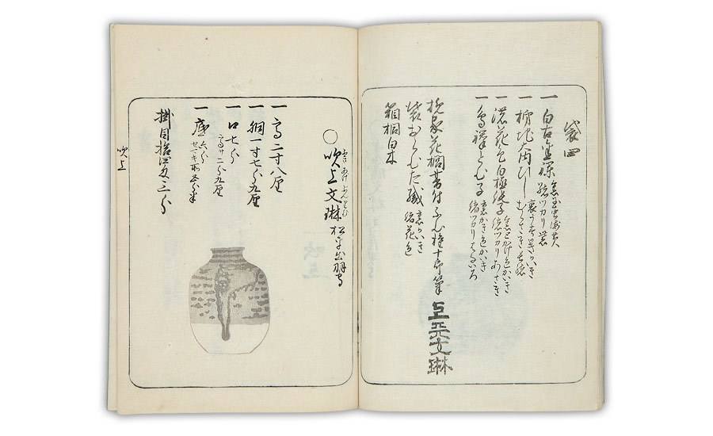

Melinda Landeck, “Mad for Meibutsu: the Collection of Tea Utensils by Early Modern Daimyo”

Melinda Landeck
Ph.D . candidate
Department of History
University of Kansas
[email redacted]
Melinda Landeck
Saturday, September 28, 2013
Melinda Landeck, “Mad for Meibutsu: the Collection of Tea Utensils by Early Modern Daimyo”
The practice of tea ceremony (chanoyu) was a pervasive pastime among Japan’s warrior elite during the tumultuous period of political unification (1573-1600) and under the subsequent Tokugawa shongual system (1600-1868), but it was much more than just a frivolous pastime. To wit, regional warlords (daimyo) expended prodigious amounts of energy and financial resources in the fevered, and sometimes highly competitive, acquisition of pedigreed objects used in tea -- iron kettles, ceramic bowls and jars, hanging scrolls and other items. These famous tea utensils, known as meibutsu (literally, “famous things”), were the object of national unifier Oda Nobunaga’s notorious “utensil hunt” of 1570, provide narrative focus to numerous anecdotal accounts of well-known warrior tea practitioners, and even played key roles in diplomatic negotiations between oppositional parties. Meibutsu catalogs and lists compiled by warrior practitioners created a shared culture of collection, valuation, and anecdotal lore focused upon tea objects within the artistic networks created around tea praxis. Using this “madness for meibutsu” as an organizing framework, this paper examines how objects came to be labeled as famous items, and traces the acquisition, gifting, use and display of pedigreed tea items among warrior tea practitioners as one means toward better understanding how the artistic activities of Japan’s early modern warrior elite also advanced their various social and political agendas.
Key words: Chanoyu, material culture, daimyÅ, Sen RikyÅ«, Oda Nobunaga, Toyotomi Hideyoshi, Furuta Oribe, Tokugawa bakufu, Tokugawa Ieyasu, Kobori Enshu, Matsudaira Fumai